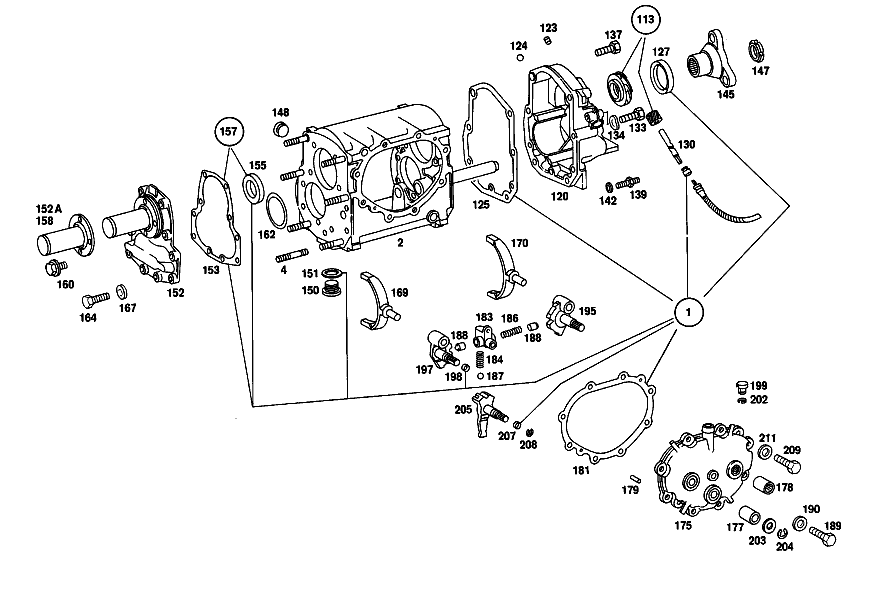

| № | Артикул | Название | Кол. | Примечание | Ограничение |
|---|---|---|---|---|---|
| 1 | A 115 260 01 68 | набор уплотнений | 1 | Коробка передач [001] UP TO CHASSIS: 023 009860 UP TO TRANSMISSION: 766040 | |
| 2 | A 115 260 09 11 | КОРПУС КП | 1 | Рулевое управление: ВлевоКоробка передач [402] БОЛЬШЕ НЕ ПОСТАВЛЯЕТСЯ [001] UP TO CHASSIS: 023 009860 UP TO TRANSMISSION: 766040 | |
| 4 | N 000939 010012 | Винт | 6 | Коробка передач [001] UP TO CHASSIS: 023 009860 UP TO TRANSMISSION: 766040 | |
| 5 | A 115 263 05 30 | - ОСЬ ШЕСТЕРНИ ЗАДНЕГО ХОДА | 1 | Коробка передач | |
| 7 | A 115 260 10 25 | Шестерня заднего хода | 1 | Коробка передач [001] UP TO CHASSIS: 023 009860 UP TO TRANSMISSION: 766040 | |
| 8 | A 117 263 01 50 | втулка | 1 | Коробка передач [001] UP TO CHASSIS: 023 009860 UP TO TRANSMISSION: 766040 | |
| 11 | A 115 263 10 02 | ПРОМЕЖУТОЧНЫЙ ВАЛ | 1 | Коробка передач [402] БОЛЬШЕ НЕ ПОСТАВЛЯЕТСЯ | |
| 15 | A 115 991 06 68 | УСТАНОВОЧНАЯ ПРУЖИНА | 1 | Коробка передач [402] БОЛЬШЕ НЕ ПОСТАВЛЯЕТСЯ [001] UP TO CHASSIS: 023 009860 UP TO TRANSMISSION: 766040 | |
| 16F | A 115 260 05 08 | Блок шестерен | 1 | (GEAR SET),3RD SPEED Коробка передач [001] UP TO CHASSIS: 023 009860 UP TO TRANSMISSION: 766040 | |
| 18 | A 115 263 07 52 | Дистанционная шайба | 1 | Коробка передач [001] UP TO CHASSIS: 023 009860 UP TO TRANSMISSION: 766040 | |
| 19 | A 001 981 71 25 | ШАРИКОПОДШИПНИК | - | Коробка передач | |
| 19 | A 004 981 42 01 | Подшипник с цил. роликами | 1 | Коробка передач | |
| 19 | A 001 981 71 25 | ШАРИКОПОДШИПНИК | - | Рулевое управление: Влево | |
| 19 | A 004 981 42 01 | Подшипник с цил. роликами | 1 | Рулевое управление: Влево [001] UP TO CHASSIS: 023 009860 UP TO TRANSMISSION: 766040 | |
| 23 | A 115 990 08 51 | гайка | 1 | Коробка передач [001] UP TO CHASSIS: 023 009860 UP TO TRANSMISSION: 766040 | |
| 23 | A 115 990 08 51 | гайка | 1 | Коробка передач [001] UP TO CHASSIS: 023 009860 UP TO TRANSMISSION: 766040 | |
| 25 | A 186 262 00 66 | Маслозащитное кольцо | 1 | Коробка передач [001] UP TO CHASSIS: 023 009860 UP TO TRANSMISSION: 766040 | |
| 27 | A 002 981 06 25 | ШАРИКОПОДШИПНИК | 1 | Коробка передач [001] UP TO CHASSIS: 023 009860 UP TO TRANSMISSION: 766040 | |
| 29 | A 123 262 04 94 | Пруж. стопорное кольцо | 1 | Коробка передач [001] UP TO CHASSIS: 023 009860 UP TO TRANSMISSION: 766040 | |
| 30 | A 186 262 04 51 | Проставочное кольцо | 1 | Коробка передач [001] UP TO CHASSIS: 023 009860 UP TO TRANSMISSION: 766040 | |
| 31 | A 136 994 06 35 | Пруж. стопорное кольцо | 1 | 1.9 MM Коробка передач [001] UP TO CHASSIS: 023 009860 UP TO TRANSMISSION: 766040 | |
| 35 | A 136 262 06 52 | Компенсационная шайба | NB | 0.1 MM Коробка передач [001] UP TO CHASSIS: 023 009860 UP TO TRANSMISSION: 766040 | |
| 40 | A 115 262 15 05 | Вторичный вал | 1 | Коробка передач [001] UP TO CHASSIS: 023 009860 UP TO TRANSMISSION: 766040 | |
| 42 | A 115 260 05 08 | Блок шестерен | 1 | Коробка передач [001] UP TO CHASSIS: 023 009860 UP TO TRANSMISSION: 766040 | |
| 45 | A 005 981 55 10 | Игольчатый подшипник | 1 | Коробка передач [001] UP TO CHASSIS: 023 009860 UP TO TRANSMISSION: 766040 | |
| 51 | A 115 262 16 34 | Кольцо синхронизатора | 2 | Коробка передач [001] UP TO CHASSIS: 023 009860 UP TO TRANSMISSION: 766040 | |
| 52 | A 120 262 23 62 | Упорная шайба | 1 | Коробка передач [001] UP TO CHASSIS: 023 009860 UP TO TRANSMISSION: 766040 | |
| 54 | A 115 260 49 45 | Корпус синхронизатора | 1 | Коробка передач [001] UP TO CHASSIS: 023 009860 UP TO TRANSMISSION: 766040 | |
| 57 | A 180 993 41 01 | пружина | 3 | Коробка передач [001] UP TO CHASSIS: 023 009860 UP TO TRANSMISSION: 766040 | |
| 58 | N 005401 306500 | Шар | 3 | 6.5mm Коробка передач [001] UP TO CHASSIS: 023 009860 UP TO TRANSMISSION: 766040 | |
| 59 | A 115 262 01 40 | Поводок | 3 | Коробка передач [001] UP TO CHASSIS: 023 009860 UP TO TRANSMISSION: 766040 | |
| 59F | A 115 993 16 20 | Торсионная пружина | 1 | Коробка передач [001] UP TO CHASSIS: 023 009860 UP TO TRANSMISSION: 766040 | |
| 62 | A 005 981 54 10 | Игольчатый подшипник | 1 | Коробка передач [001] UP TO CHASSIS: 023 009860 UP TO TRANSMISSION: 766040 | |
| 64 | A 115 990 10 51 | гайка | 1 | Коробка передач [001] UP TO CHASSIS: 023 009860 UP TO TRANSMISSION: 766040 | |
| 67 | A 005 981 56 10 | Игольчатый подшипник | 1 | Коробка передач [001] UP TO CHASSIS: 023 009860 UP TO TRANSMISSION: 766040 | |
| 68 | A 115 260 31 44 | ШЕСТЕРНЯ | 1 | Коробка передач [402] БОЛЬШЕ НЕ ПОСТАВЛЯЕТСЯ [001] UP TO CHASSIS: 023 009860 UP TO TRANSMISSION: 766040 | |
| 69 | A 115 262 09 62 | ШАЙБА УПОРНАЯ | 1 | Коробка передач [402] БОЛЬШЕ НЕ ПОСТАВЛЯЕТСЯ [001] UP TO CHASSIS: 023 009860 UP TO TRANSMISSION: 766040 | |
| 72 | A 115 262 15 34 | КОЛЬЦО СИНХРОНИЗАТОРА | 2 | Коробка передач [001] UP TO CHASSIS: 023 009860 UP TO TRANSMISSION: 766040 | |
| 75 | A 115 260 48 45 | Корпус синхронизатора | 1 | Коробка передач [001] UP TO CHASSIS: 023 009860 UP TO TRANSMISSION: 766040 | |
| 77 | A 180 993 41 01 | пружина | 3 | Коробка передач [001] UP TO CHASSIS: 023 009860 UP TO TRANSMISSION: 766040 | |
| 78 | N 005401 306500 | Шар | 3 | 6.5mm Коробка передач [001] UP TO CHASSIS: 023 009860 UP TO TRANSMISSION: 766040 | |
| 80 | A 115 262 02 40 | ПОВОДОК | 3 | Коробка передач [402] БОЛЬШЕ НЕ ПОСТАВЛЯЕТСЯ [001] UP TO CHASSIS: 023 009860 UP TO TRANSMISSION: 766040 | |
| 83 | A 115 262 07 11 | ШЕСТЕРНЯ | 1 | Коробка передач | |
| 84 | A 115 262 25 62 | ШАЙБА УПОРНАЯ | 1 | 3.8 MM Коробка передач [402] БОЛЬШЕ НЕ ПОСТАВЛЯЕТСЯ [001] UP TO CHASSIS: 023 009860 UP TO TRANSMISSION: 766040 | |
| 87 | A 115 262 02 51 | Проставочное кольцо | 1 | Коробка передач [402] БОЛЬШЕ НЕ ПОСТАВЛЯЕТСЯ [001] UP TO CHASSIS: 023 009860 UP TO TRANSMISSION: 766040 | |
| 87 | A 115 262 02 51 | Проставочное кольцо | 1 | Коробка передач [402] БОЛЬШЕ НЕ ПОСТАВЛЯЕТСЯ [001] UP TO CHASSIS: 023 009860 UP TO TRANSMISSION: 766040 | |
| 90 | A 005 981 56 10 | Игольчатый подшипник | 1 | Коробка передач [001] UP TO CHASSIS: 023 009860 UP TO TRANSMISSION: 766040 | |
| 94 | A 002 981 06 25 | ШАРИКОПОДШИПНИК | 1 | Коробка передач [001] UP TO CHASSIS: 023 009860 UP TO TRANSMISSION: 766040 | |
| 96 | A 115 263 09 32 | ШЕСТЕРНЯ ОБРАТНОГО ХОДА | 1 | Коробка передач | |
| 97 | A 136 994 06 35 | Пруж. стопорное кольцо | 1 | 1.9 MM Коробка передач [001] UP TO CHASSIS: 023 009860 UP TO TRANSMISSION: 766040 | |
| 100 | A 136 262 06 52 | Компенсационная шайба | NB | 0.1 MM Коробка передач [001] UP TO CHASSIS: 023 009860 UP TO TRANSMISSION: 766040 | |
| 104 | A 115 262 26 39 | Удерживающее кольцо | 1 | Коробка передач [001] UP TO CHASSIS: 023 009860 UP TO TRANSMISSION: 766040 | |
| 106 | N 000137 007201 | Пружинная шайба | 2 | Коробка передач [001] UP TO CHASSIS: 023 009860 UP TO TRANSMISSION: 766040 | |
| 107 | A 115 990 06 01 | болт | 4 | Коробка передач [001] UP TO CHASSIS: 023 009860 UP TO TRANSMISSION: 766040 | |
| 108 | A 004 981 42 01 | Подшипник с цил. роликами | 1 | Коробка передач [001] UP TO CHASSIS: 023 009860 UP TO TRANSMISSION: 766040 | |
| 109 | A 115 990 09 51 | гайка | 1 | Коробка передач [001] UP TO CHASSIS: 023 009860 UP TO TRANSMISSION: 766040 | |
| 110 | A 117 262 07 21 | Шестерня заднего хода | 1 | Коробка передач [001] UP TO CHASSIS: 023 009860 UP TO TRANSMISSION: 766040 | |
| 113 | A 115 260 06 48 | ПРИВОДНАЯ ШЕСТЕРНЯ | 1 | Коробка передач [001] UP TO CHASSIS: 023 009860 UP TO TRANSMISSION: 766040 | |
| 114 | A 115 260 06 31 | Тяга переключения передач | 1 | Коробка передач [001] UP TO CHASSIS: 023 009860 UP TO TRANSMISSION: 766040 | |
| 115 | A 115 265 02 19 | Поводок | 1 | Коробка передач [001] UP TO CHASSIS: 023 009860 UP TO TRANSMISSION: 766040 | |
| 116 | N 001481 006005 | Распорный штифт | 1 | Коробка передач [001] UP TO CHASSIS: 023 009860 UP TO TRANSMISSION: 766040 | |
| 120 | A 115 260 22 16 | КРЫШКА КОРПУСА | 1 | Рулевое управление: ВлевоКоробка передач [402] БОЛЬШЕ НЕ ПОСТАВЛЯЕТСЯ | |
| 124 | A 001 981 33 85 | ШАРИК | 1 | Коробка передач [402] БОЛЬШЕ НЕ ПОСТАВЛЯЕТСЯ [001] UP TO CHASSIS: 023 009860 UP TO TRANSMISSION: 766040 | |
| 125 | A 115 261 02 79 | Уплотнительная прокладка | 1 | Коробка передач [402] БОЛЬШЕ НЕ ПОСТАВЛЯЕТСЯ | |
| 127 | A 005 997 87 47 | УПЛОТНИТ. КОЛЬЦО | 1 | ВТОРИЧНЫЙ ВАЛ Коробка передач | |
| 130 | A 115 264 01 32 | Вал | 1 | Коробка передач [001] UP TO CHASSIS: 023 009860 UP TO TRANSMISSION: 766040 | |
| 133 | N 000931 006083 | БОЛТ | 1 | Коробка передач [001] UP TO CHASSIS: 023 009860 UP TO TRANSMISSION: 766040 | |
| 134 | N 000137 006204 | Пружинная шайба | 1 | Коробка передач [001] UP TO CHASSIS: 023 009860 UP TO TRANSMISSION: 766040 | |
| 137 | N 000931 010258 | Винт | 2 | Коробка передач [001] UP TO CHASSIS: 023 009860 UP TO TRANSMISSION: 766040 | |
| 139 | A 115 990 13 10 | БОЛТ | 2 | Коробка передач [402] БОЛЬШЕ НЕ ПОСТАВЛЯЕТСЯ [001] UP TO CHASSIS: 023 009860 UP TO TRANSMISSION: 766040 | |
| 142 | N 000125 010532 | Шайба | 6 | Коробка передач [001] UP TO CHASSIS: 023 009860 UP TO TRANSMISSION: 766040 | |
| 145 | A 115 262 11 45 | Фланец | 1 | Коробка передач [001] UP TO CHASSIS: 023 009860 UP TO TRANSMISSION: 766040 | |
| 148 | A 186 997 00 32 | ЗАГЛУШКА РЕЗЬБОВАЯ | 1 | M24X1,5 Коробка передач [001] UP TO CHASSIS: 023 009860 UP TO TRANSMISSION: 766040 | |
| 150 | A 210 997 01 32 | Резьбовая пробка | 1 | [001] UP TO CHASSIS: 023 009860 UP TO TRANSMISSION: 766040 | |
| 151 | N 007603 024105 | Уплотнительное кольцо | 1 | Коробка передач [001] UP TO CHASSIS: 023 009860 UP TO TRANSMISSION: 766040 | |
| 152 | A 115 260 11 21 | Крышка корпуса | - | Коробка передач | |
| 152 | A 115 261 16 18 | КРЫШКА КОРПУСА | - | Коробка передач | |
| 152 | A 094 261 09 00 | Крышка корпуса | 1 | Коробка передач [402] БОЛЬШЕ НЕ ПОСТАВЛЯЕТСЯ [001] UP TO CHASSIS: 023 009860 UP TO TRANSMISSION: 766040 | |
| 152A | A 115 261 02 43 | - Направляющая трубка | 1 | Коробка передач [001] UP TO CHASSIS: 023 009860 UP TO TRANSMISSION: 766040 | |
| 157 | A 115 260 00 68 | КОМПЛЕКТ УПЛОТНЕНИЙ | 1 | Коробка передач [001] UP TO CHASSIS: 023 009860 UP TO TRANSMISSION: 766040 | |
| 158 | A 115 261 02 43 | Направляющая трубка | - | СМ. РИС.: 152A Коробка передач | |
| 162 | A 602 263 02 52 | Дистанционная шайба | NB | 0.1 MM Коробка передач [402] БОЛЬШЕ НЕ ПОСТАВЛЯЕТСЯ [001] UP TO CHASSIS: 023 009860 UP TO TRANSMISSION: 766040 | |
| 164 | N 000931 007006 | БОЛТ | 10 | Коробка передач [001] UP TO CHASSIS: 023 009860 UP TO TRANSMISSION: 766040 | |
| 167 | N 000125 007408 | Шайба | 10 | Коробка передач [001] UP TO CHASSIS: 023 009860 UP TO TRANSMISSION: 766040 | |
| 169 | A 602 265 03 02 | Вилка перекл.передач | 1 | Коробка передач [001] UP TO CHASSIS: 023 009860 UP TO TRANSMISSION: 766040 | |
| 170 | A 602 265 05 01 | ВИЛКА ПЕРЕКЛЮЧЕНИЯ | 1 | Коробка передач [001] UP TO CHASSIS: 023 009860 UP TO TRANSMISSION: 766040 | |
| 175 | A 115 260 47 13 | Крышка корпуса | 1 | Рулевое управление: ВлевоКоробка передач [402] БОЛЬШЕ НЕ ПОСТАВЛЯЕТСЯ [001] UP TO CHASSIS: 023 009860 UP TO TRANSMISSION: 766040 | |
| 177 | A 115 262 05 50 | втулка | 2 | [001] UP TO CHASSIS: 023 009860 UP TO TRANSMISSION: 766040 | |
| 178 | A 010 981 60 10 | Игольчатый подшипник | 1 | Коробка передач [001] UP TO CHASSIS: 023 009860 UP TO TRANSMISSION: 766040 | |
| 179 | N 000007 006203 | Цилиндрический штифт | 3 | Коробка передач [001] UP TO CHASSIS: 023 009860 UP TO TRANSMISSION: 766040 | |
| 183 | A 115 260 42 73 | Фиксирующая обойма | 1 | Коробка передач [001] UP TO CHASSIS: 023 009860 UP TO TRANSMISSION: 766040 | |
| 184 | A 115 993 61 02 | Нажимная пружина | 1 | Коробка передач [001] UP TO CHASSIS: 023 009860 UP TO TRANSMISSION: 766040 | |
| 186 | A 115 993 33 04 | Нажимная пружина | 1 | Коробка передач [001] UP TO CHASSIS: 023 009860 UP TO TRANSMISSION: 766040 | |
| 187 | N 005401 999008 | Шар | 2 | Коробка передач [402] БОЛЬШЕ НЕ ПОСТАВЛЯЕТСЯ [001] UP TO CHASSIS: 023 009860 UP TO TRANSMISSION: 766040 | |
| 188 | A 115 265 05 74 | Палец | 2 | Коробка передач [001] UP TO CHASSIS: 023 009860 UP TO TRANSMISSION: 766040 | |
| 189 | N 304017 008021 | Винт с 6-гранной головкой | 1 | M8X20 Коробка передач [001] UP TO CHASSIS: 023 009860 UP TO TRANSMISSION: 766040 | |
| 190 | N 000125 008443 | Шайба | 1 | 8 MM Коробка передач [001] UP TO CHASSIS: 023 009860 UP TO TRANSMISSION: 766040 | |
| 195 | A 115 260 19 73 | ПАЗ ВКЛЮЧЕНИЯ | 1 | Рулевое управление: ВлевоКоробка передач [001] UP TO CHASSIS: 023 009860 UP TO TRANSMISSION: 766040 | |
| 197 | A 115 260 38 73 | ПАЗ ВКЛЮЧЕНИЯ | 1 | Рулевое управление: ВлевоКоробка передач [001] UP TO CHASSIS: 023 009860 UP TO TRANSMISSION: 766040 | |
| 198 | A 007 997 03 48 | Уплотнительное кольцо | 2 | Коробка передач | |
| 199 | A 115 261 00 66 | Воздушный клапан | 1 | Коробка передач [001] UP TO CHASSIS: 023 009860 UP TO TRANSMISSION: 766040 | |
| 202 | N 009045 012000 | Пруж. стопорное кольцо | 1 | Коробка передач [001] UP TO CHASSIS: 023 009860 UP TO TRANSMISSION: 766040 | |
| 203 | A 003 990 68 40 | Диск | 3 | Коробка передач [001] UP TO CHASSIS: 023 009860 UP TO TRANSMISSION: 766040 | |
| 204 | N 006799 010001 | Стопорная шайба | 2 | Коробка передач [001] UP TO CHASSIS: 023 009860 UP TO TRANSMISSION: 766040 | |
| 205 | A 115 260 12 38 | Вал упр. перекл.передач | 1 | Коробка передач [001] UP TO CHASSIS: 023 009860 UP TO TRANSMISSION: 766040 | |
| 207 | A 007 997 03 48 | Уплотнительное кольцо | 2 | Коробка передач | |
| 208 | N 006799 010001 | Стопорная шайба | 1 | Коробка передач [001] UP TO CHASSIS: 023 009860 UP TO TRANSMISSION: 766040 | |
| 209 | N 000933 007027 | Винт | 8 | Коробка передач [001] UP TO CHASSIS: 023 009860 UP TO TRANSMISSION: 766040 | |
| 211 | N 000125 007408 | Шайба | 8 | Коробка передач [001] UP TO CHASSIS: 023 009860 UP TO TRANSMISSION: 766040 | |
| 220 | A 115 260 32 80 | КРОНШТЕЙН | 1 | Рулевое управление: Влево | |
| 223 | A 001 981 84 10 | - Игольчатый подшипник | 1 | ||
| 225 | N 000931 008246 | Винт | - | ||
| 225 | N 304017 008028 | Винт с 6-гранной головкой | 1 | ||
| 226 | N 000137 008204 | Пружинная шайба | - | ||
| 226 | N 000137 008212 | Пружинная шайба | 1 | ||
| 227 | N 000934 008013 | Гайка | 1 | ||
| 228 | N 000561 006105 | Винт | 1 | ||
| 229 | N 000137 006204 | Пружинная шайба | 1 | ||
| 235 | A 115 260 29 80 | Опорный кронштейн | 1 | Рулевое управление: ВлевоКоробка передач | |
| 237 | A 115 260 47 37 | Рычаг | 1 | Рулевое управление: ВлевоКоробка передач | |
| 239 | A 115 260 48 37 | РЫЧАГ | 1 | Рулевое управление: ВлевоКоробка передач | |
| 242 | A 115 260 62 37 | РЫЧАГ | 1 | Рулевое управление: ВлевоАвтоматическая коробка переключения передач [402] БОЛЬШЕ НЕ ПОСТАВЛЯЕТСЯ | |
| 243 | A 002 981 02 10 | - Игольчатый подшипник | 2 | Коробка передач | |
| 243 | A 002 981 02 10 | Игольчатый подшипник | 1 | Рулевое управление: ВлевоАвтоматическая коробка переключения передач | |
| 245 | A 115 260 82 37 | Рычаг | 1 | Рулевое управление: ВлевоАвтоматическая коробка переключения передач | |
| 246 | A 112 268 00 39 | НАПРАВЛЯЮЩ. ЦАПФА | 1 | Автоматическая коробка переключения передач | |
| 247 | N 000933 006130 | Винт | 1 | Автоматическая коробка переключения передач | |
| 248 | A 094 990 68 10 | Пружинное кольцо | 1 | Автоматическая коробка переключения передач | |
| 249 | A 115 268 03 47 | Кулиса | 1 | Рулевое управление: ВлевоАвтоматическая коробка переключения передач | |
| 252 | N 000933 006102 | Винт | 2 | Автоматическая коробка переключения передач | |
| 253 | A 094 990 68 10 | Пружинное кольцо | 2 | Автоматическая коробка переключения передач | |
| 254 | N 000125 006421 | Шайба | 2 | Автоматическая коробка переключения передач | |
| 257 | N 900055 012001 | Пружинная шайба | 1 | ||
| 259 | A 312 990 03 40 | Диск | 1 | ||
| 260 | N 006799 010001 | Стопорная шайба | 1 | ||
| 262 | N 000137 008204 | Пружинная шайба | - | ||
| 262 | N 000137 008212 | Пружинная шайба | 3 | ||
| 265 | N 000934 008013 | Гайка | 3 | ||
| 266 | A 115 260 53 82 | Тяга переключения передач | 1 | Рулевое управление: ВлевоКоробка передач | |
| 280 | A 115 260 44 39 | РЫЧАГ ПЕРЕКЛЮЧЕНИЯ | 1 | Рулевое управление: Влево | |
| 285 | A 115 991 03 01 | Палец | 1 | ||
| 286 | A 115 268 05 50 | втулка | 1 | Коробка передач | |
| 290 | A 115 267 01 14 | Колпачок | 1 | ||
| 291 | A 115 993 99 02 | Нажимная пружина | 1 | ||
| 292 | N 001481 005017 | Распорный штифт | 1 | ||
| 295 | A 120 993 21 01 | пружина | 1 | ||
| 296 | A 115 268 04 39 | НАПРАВЛЯЮЩ. ЦАПФА | 1 | ||
| 297 | A 115 997 14 40 | Уплотнительное кольцо | 2 | [080] FROM CHASSIS: 023 100680 072 102864 073 104846 | |
| 298 | A 186 990 69 40 | Диск | NB | ||
| 299 | A 186 268 02 73 | предохранитель | 1 | ||
| 299 | A 186 268 02 73 | предохранитель | 1 | Рулевое управление: Влево | |
| 301 | A 116 268 04 97 | Манжета | 1 | Коробка передач | |
| 304 | A 115 260 78 37 | Рычаг | 1 | Рулевое управление: ВлевоКоробка передач | |
| 305 | A 115 260 80 37 | Поворотный рычаг | 1 | Коробка передач | |
| 306 | A 115 260 94 37 | РЫЧАГ | 1 | Коробка передач | |
| 310 | A 115 268 00 32 | ВАЛ | 1 | Рулевое управление: ВправоАвтоматическая коробка переключения передач | |
| 311 | A 115 268 04 01 | КОРПУС | 2 | Рулевое управление: ВправоАвтоматическая коробка переключения передач [402] БОЛЬШЕ НЕ ПОСТАВЛЯЕТСЯ | |
| 312 | A 111 268 00 86 | Резиновое кольцо | 2 | Рулевое управление: ВправоАвтоматическая коробка переключения передач | |
| 313 | A 111 991 00 29 | Шар | 2 | Рулевое управление: ВправоАвтоматическая коробка переключения передач | |
| 315 | A 180 268 00 76 | ШАЙБА | 4 | Рулевое управление: ВправоАвтоматическая коробка переключения передач | |
| 317 | A 111 997 10 40 | УПЛОТНИТ. КОЛЬЦО | 4 | Рулевое управление: ВправоАвтоматическая коробка переключения передач | |
| 318 | N 000988 010000 | Регулировочная шайба | 4 | Рулевое управление: ВправоАвтоматическая коробка переключения передач | |
| 319 | N 000471 010000 | Стопорное кольцо | 2 | Рулевое управление: ВправоАвтоматическая коробка переключения передач | |
| 320 | A 000 981 18 10 | Игольчатый подшипник | 2 | Рулевое управление: ВправоАвтоматическая коробка переключения передач | |
| 323 | A 112 991 03 40 | РАСПОРН. ТРУБКА | 1 | Рулевое управление: ВправоАвтоматическая коробка переключения передач | |
| 324 | A 115 260 00 81 | РЫЧАГ | 1 | Рулевое управление: ВправоАвтоматическая коробка переключения передач [402] БОЛЬШЕ НЕ ПОСТАВЛЯЕТСЯ | |
| 326 | A 114 260 00 81 | РЫЧАГ | 1 | Рулевое управление: ВправоАвтоматическая коробка переключения передач [402] БОЛЬШЕ НЕ ПОСТАВЛЯЕТСЯ | |
| 327 | N 000934 007005 | Гайка | 2 | Рулевое управление: ВправоАвтоматическая коробка переключения передач | |
| 328 | N 912004 007100 | Пружинное кольцо | 2 | Рулевое управление: ВправоАвтоматическая коробка переключения передач | |
| 330 | N 000933 006130 | Винт | 4 | Рулевое управление: ВправоАвтоматическая коробка переключения передач | |
| 331 | N 000137 006204 | Пружинная шайба | 4 | Рулевое управление: ВправоАвтоматическая коробка переключения передач | |
| 333 | A 115 462 27 39 | ДЕРЖАТЕЛЬ | 2 | Рулевое управление: ВправоАвтоматическая коробка переключения передач | |
| 334 | A 115 260 68 37 | РЫЧАГ | 1 | Рулевое управление: ВправоАвтоматическая коробка переключения передач [402] БОЛЬШЕ НЕ ПОСТАВЛЯЕТСЯ | |
| 335 | A 115 268 02 76 | Диск | 2 | ||
| 338 | A 115 990 02 48 | Пружинная шайба | 1 | ||
| 339 | A 115 260 03 89 | ПРИВОДНАЯ ШТАНГА | - | Рулевое управление: ВлевоКоробка передач | |
| 339 | A 111 260 00 66 | Шаровой подпятник | 2 | Рулевое управление: ВлевоКоробка передач | |
| 341 | N 071805 010204 | - Шаровой подпятник | 4 | Коробка передач | |
| 342 | N 000939 006011 | - Винт | 2 | Рулевое управление: ВлевоКоробка передач | |
| 344 | N 000439 006204 | - Гайка | - | Коробка передач | |
| 344 | A 094 990 09 00 | - Шестигранная гайка | 2 | Коробка передач | |
| 345 | N 071805 010400 | Защитный кронштейн | 4 | Коробка передач | |
| 345 | N 071805 010400 | Защитный кронштейн | 2 | Автоматическая коробка переключения передач | |
| 346 | A 000 268 10 66 | ПОДПЯТНИК ШАРОВОЙ | - | Автоматическая коробка переключения передач | |
| 346 | A 000 268 12 66 | Шаровой подпятник | 1 | Автоматическая коробка переключения передач | |
| 348 | A 000 545 34 06 | ВЫКЛЮЧАТЕЛЬ | 1 | Рулевое управление: ВлевоКоробка передач [072] UP TO CHASSIS: 023,072,073 100000 | |
| 349 | A 115 997 11 81 | - КАБ. ВТУЛКА | - | Коробка передач | |
| 349 | A 126 997 25 81 | - втулка | 1 | Коробка передач | |
| 350 | A 003 545 71 28 | - ШТЕКЕР | - | Коробка передач | |
| 350 | A 006 545 78 28 | - Корпус штекера | 1 | 4\-СЕКЦ.; 6\-PIN Коробка передач | |
| 351 | A 114 260 00 33 | ТЯГА ПЕРЕКЛ. ПЕРЕДАЧ | 1 | Рулевое управление: ВлевоКоробка передач [402] БОЛЬШЕ НЕ ПОСТАВЛЯЕТСЯ | |
| 353 | A 114 260 01 33 | ТЯГА ПЕРЕКЛ. ПЕРЕДАЧ | 1 | Рулевое управление: ВлевоКоробка передач | |
| 354 | A 000 991 38 22 | - Шаровой подпятник | 4 | Коробка передач | |
| 357 | N 070616 010004 | - Гайка | 4 | Коробка передач | |
| 358 | A 114 260 02 33 | ТЯГА ПЕРЕКЛ. ПЕРЕДАЧ | 1 | Рулевое управление: ВлевоКоробка передач [402] БОЛЬШЕ НЕ ПОСТАВЛЯЕТСЯ | |
| 359 | A 115 260 03 53 | - Концевой элемент | 1 | Рулевое управление: ВправоКоробка передач [402] БОЛЬШЕ НЕ ПОСТАВЛЯЕТСЯ | |
| 362 | A 115 992 01 10 | - ВТУЛКА | - | Рулевое управление: ВправоКоробка передач | |
| 362 | A 210 992 00 10 | - втулка | 1 | Рулевое управление: ВправоКоробка передач | |
| 370 | A 000 994 29 60 | предохранитель | 3 | Рулевое управление: ВлевоКоробка передач | |
| 370 | A 000 994 29 60 | предохранитель | 4 | Рулевое управление: ВправоКоробка передач | |
| 370 | A 000 994 29 60 | предохранитель | 1 | Автоматическая коробка переключения передач | |
| 373 | A 115 268 12 42 | Кнопка ручки рычага КП | 1 | Рулевое управление: ВлевоКоробка передач | |
| 375 | A 115 268 01 72 | ГАЙКА | 1 | Рулевое управление: ВлевоКоробка передач | |
| 380 | A 115 260 75 37 | РЫЧАГ | - | ||
| 380 | A 115 268 25 30 | Рычаг | 0 | ||
| 380 | A 115 268 25 30 | - Рычаг | 1 | ПЕРВАЯ И ВТОРАЯ ПЕРЕДАЧА Рулевое управление: ВлевоКоробка передач | |
| 380 | A 115 268 25 30 | - Рычаг | 1 | ТРЕТЬЯ И ЧЕТВЁРТАЯ ПЕРЕДАЧА Коробка передач | |
| 383 | A 115 260 77 37 | РЫЧАГ | 1 | ПЕРЕДАЧА ЗАДНЕГО ХОДА Коробка передач | |
| 384 | A 000 992 05 10 | - ВТУЛКА | 3 | Коробка передач | |
| 385 | N 000933 006127 | Винт | 3 | M6X25 Коробка передач | |
| 386 | A 094 990 68 10 | Пружинное кольцо | 3 | Коробка передач | |
| 387 | N 000934 006013 | Гайка | - | Коробка передач | |
| 387 | N 304032 006008 | Шестигранная гайка | 3 | Коробка передач | |
| 390 | A 115 260 05 62 | ДЕРЖАТЕЛЬ | 1 | Рулевое управление: ВлевоАвтоматическая коробка переключения передач [402] БОЛЬШЕ НЕ ПОСТАВЛЯЕТСЯ | |
| 392 | N 000931 006094 | Винт | 1 | Автоматическая коробка переключения передач | |
| 393 | A 094 990 68 10 | Пружинное кольцо | 1 | Автоматическая коробка переключения передач | |
| 394 | N 000934 006013 | Гайка | - | Автоматическая коробка переключения передач | |
| 394 | N 304032 006008 | Шестигранная гайка | 1 | Автоматическая коробка переключения передач | |
| A 115 260 42 01 | Коробка передач | 1 | Рулевое управление: ВлевоКоробка передач [001] UP TO CHASSIS: 023 009860 UP TO TRANSMISSION: 766040 | ||
| A 115 260 32 01 | КОРОБКА ПЕРЕДАЧ | 1 | Рулевое управление: ВправоКоробка передач [001] UP TO CHASSIS: 023 009860 UP TO TRANSMISSION: 766040 | ||
| A 115 260 10 11 | КОРПУС КП | 1 | Рулевое управление: ВправоКоробка передач [001] UP TO CHASSIS: 023 009860 UP TO TRANSMISSION: 766040 | ||
| A 115 263 13 30 | Ось шестерни заднего хода | 1 | Коробка передач [001] UP TO CHASSIS: 023 009860 UP TO TRANSMISSION: 766040 | ||
| A 115 263 18 02 | ПРОМЕЖУТОЧНЫЙ ВАЛ | 1 | Коробка передач [402] БОЛЬШЕ НЕ ПОСТАВЛЯЕТСЯ [001] UP TO CHASSIS: 023 009860 UP TO TRANSMISSION: 766040 | ||
| A 115 260 06 08 | Блок шестерен | 1 | Коробка передач [001] UP TO CHASSIS: 023 009860 UP TO TRANSMISSION: 766040 | ||
| A 002 981 07 25 | Рад. шарикоподшипник | 1 | Коробка передач [001] UP TO CHASSIS: 023 009860 UP TO TRANSMISSION: 766040 | ||
| A 136 994 09 35 | Пруж. стопорное кольцо | 1 | 2.0 MM Коробка передач [001] UP TO CHASSIS: 023 009860 UP TO TRANSMISSION: 766040 | ||
| A 136 994 09 35 | Пруж. стопорное кольцо | 1 | 2.05 MM Коробка передач [001] UP TO CHASSIS: 023 009860 UP TO TRANSMISSION: 766040 | ||
| A 115 994 22 35 | Пруж. стопорное кольцо | 1 | 2.1 MM Коробка передач [001] UP TO CHASSIS: 023 009860 UP TO TRANSMISSION: 766040 | ||
| A 115 994 10 35 | Пруж. стопорное кольцо | 1 | 2.18 MM Коробка передач [001] UP TO CHASSIS: 023 009860 UP TO TRANSMISSION: 766040 | ||
| A 136 262 07 52 | Компенсационная шайба | NB | 0.2 MM Коробка передач [001] UP TO CHASSIS: 023 009860 UP TO TRANSMISSION: 766040 | ||
| A 136 262 08 52 | Компенсационная шайба | NB | 0.3 MM Коробка передач [001] UP TO CHASSIS: 023 009860 UP TO TRANSMISSION: 766040 | ||
| A 003 981 08 10 | ПОДШИПНИК ИГОЛЬЧАТЫЙ | 1 | Коробка передач [001] UP TO CHASSIS: 023 009860 UP TO TRANSMISSION: 766040 | ||
| A 003 981 09 10 | ПОДШИПНИК ИГОЛЬЧАТЫЙ | 1 | Коробка передач [001] UP TO CHASSIS: 023 009860 UP TO TRANSMISSION: 766040 | ||
| A 003 981 03 10 | ПОДШИПНИК ИГОЛЬЧАТЫЙ | 1 | Коробка передач [001] UP TO CHASSIS: 023 009860 UP TO TRANSMISSION: 766040 | ||
| A 115 262 32 34 | КОЛЬЦО СИНХРОНИЗАТОРА | 2 | Коробка передач [001] UP TO CHASSIS: 023 009860 UP TO TRANSMISSION: 766040 | ||
| A 002 981 81 10 | ПОДШИПНИК ИГОЛЬЧАТЫЙ | 1 | Коробка передач [001] UP TO CHASSIS: 023 009860 UP TO TRANSMISSION: 766040 | ||
| A 005 981 56 10 | Игольчатый подшипник | 1 | Коробка передач [001] UP TO CHASSIS: 023 009860 UP TO TRANSMISSION: 766040 | ||
| A 005 981 56 10 | Игольчатый подшипник | 1 | Коробка передач [001] UP TO CHASSIS: 023 009860 UP TO TRANSMISSION: 766040 | ||
| A 115 262 31 34 | Кольцо синхронизатора | 2 | Коробка передач [001] UP TO CHASSIS: 023 009860 UP TO TRANSMISSION: 766040 | ||
| A 115 262 09 62 | ШАЙБА УПОРНАЯ | 1 | Коробка передач [402] БОЛЬШЕ НЕ ПОСТАВЛЯЕТСЯ [001] UP TO CHASSIS: 023 009860 UP TO TRANSMISSION: 766040 | ||
| A 115 262 16 11 | Шестерня | 1 | Коробка передач [001] UP TO CHASSIS: 023 009860 UP TO TRANSMISSION: 766040 | ||
| A 115 262 26 62 | ШАЙБА УПОРНАЯ | 1 | 3.9 MM Коробка передач [402] БОЛЬШЕ НЕ ПОСТАВЛЯЕТСЯ [001] UP TO CHASSIS: 023 009860 UP TO TRANSMISSION: 766040 | ||
| A 115 262 27 62 | Упорная шайба | 1 | 4.0 MM Коробка передач [001] UP TO CHASSIS: 023 009860 UP TO TRANSMISSION: 766040 | ||
| A 115 262 28 62 | ШАЙБА УПОРНАЯ | 1 | 4.1 MM Коробка передач [402] БОЛЬШЕ НЕ ПОСТАВЛЯЕТСЯ [001] UP TO CHASSIS: 023 009860 UP TO TRANSMISSION: 766040 | ||
| A 115 262 29 62 | ШАЙБА УПОРНАЯ | 1 | 4.2 MM Коробка передач [402] БОЛЬШЕ НЕ ПОСТАВЛЯЕТСЯ [001] UP TO CHASSIS: 023 009860 UP TO TRANSMISSION: 766040 | ||
| A 005 981 56 10 | Игольчатый подшипник | 1 | Коробка передач [001] UP TO CHASSIS: 023 009860 UP TO TRANSMISSION: 766040 | ||
| A 005 981 56 10 | Игольчатый подшипник | 1 | Коробка передач [001] UP TO CHASSIS: 023 009860 UP TO TRANSMISSION: 766040 | ||
| A 002 981 07 25 | Рад. шарикоподшипник | 1 | Коробка передач [001] UP TO CHASSIS: 023 009860 UP TO TRANSMISSION: 766040 | ||
| A 115 263 22 32 | Шестерня заднего хода | 1 | Коробка передач [001] UP TO CHASSIS: 023 009860 UP TO TRANSMISSION: 766040 | ||
| A 136 994 09 35 | Пруж. стопорное кольцо | 1 | 2.0 MM Коробка передач [001] UP TO CHASSIS: 023 009860 UP TO TRANSMISSION: 766040 | ||
| A 136 994 09 35 | Пруж. стопорное кольцо | 1 | 2.05 MM Коробка передач [001] UP TO CHASSIS: 023 009860 UP TO TRANSMISSION: 766040 | ||
| A 115 994 22 35 | Пруж. стопорное кольцо | 1 | 2.1 MM Коробка передач [001] UP TO CHASSIS: 023 009860 UP TO TRANSMISSION: 766040 | ||
| A 115 994 10 35 | Пруж. стопорное кольцо | 1 | 2.18 MM Коробка передач [001] UP TO CHASSIS: 023 009860 UP TO TRANSMISSION: 766040 | ||
| A 136 262 07 52 | Компенсационная шайба | NB | 0.2 MM Коробка передач [001] UP TO CHASSIS: 023 009860 UP TO TRANSMISSION: 766040 | ||
| A 136 262 08 52 | Компенсационная шайба | NB | 0.3 MM Коробка передач [001] UP TO CHASSIS: 023 009860 UP TO TRANSMISSION: 766040 | ||
| A 115 260 39 16 | Крышка корпуса | 1 | Рулевое управление: ВлевоКоробка передач [001] UP TO CHASSIS: 023 009860 UP TO TRANSMISSION: 766040 | ||
| A 115 260 23 16 | КРЫШКА КОРПУСА | 1 | Рулевое управление: ВправоКоробка передач | ||
| A 115 260 25 16 | КРЫШКА КОРПУСА | 1 | [402] БОЛЬШЕ НЕ ПОСТАВЛЯЕТСЯ [001] UP TO CHASSIS: 023 009860 UP TO TRANSMISSION: 766040 | ||
| A 115 274 00 60 | УПЛОТНИТ. КОЛЬЦО | 1 | Коробка передач [402] БОЛЬШЕ НЕ ПОСТАВЛЯЕТСЯ | ||
| N 000931 010300 | Винт | 2 | Коробка передач [001] UP TO CHASSIS: 023 009860 UP TO TRANSMISSION: 766040 | ||
| N 000931 007019 | Винт | 3 | Коробка передач [001] UP TO CHASSIS: 023 009860 UP TO TRANSMISSION: 766040 | ||
| N 000125 007408 | Шайба | 3 | Коробка передач [001] UP TO CHASSIS: 023 009860 UP TO TRANSMISSION: 766040 | ||
| A 123 990 00 60 | гайка | 1 | Коробка передач | ||
| N 304017 006018 | Винт с 6-гранной головкой | 4 | M6X12 Коробка передач [001] UP TO CHASSIS: 023 009860 UP TO TRANSMISSION: 766040 | ||
| A 602 263 03 52 | Дистанционная шайба | NB | 0.25 MM Коробка передач [001] UP TO CHASSIS: 023 009860 UP TO TRANSMISSION: 766040 [402] БОЛЬШЕ НЕ ПОСТАВЛЯЕТСЯ | ||
| A 602 263 04 52 | Дистанционная шайба | NB | 0.5mm Коробка передач [001] UP TO CHASSIS: 023 009860 UP TO TRANSMISSION: 766040 | ||
| A 115 260 55 13 | КРЫШКА КОРПУСА | 1 | Рулевое управление: ВправоКоробка передач [001] UP TO CHASSIS: 023 009860 UP TO TRANSMISSION: 766040 | ||
| A 009 997 82 48 | - Кольцевая прокладка | 1 | Коробка передач [001] UP TO CHASSIS: 023 009860 UP TO TRANSMISSION: 766040 | ||
| A 115 261 00 80 | Уплотнительная прокладка | 1 | Коробка передач | ||
| A 115 260 21 73 | ПАЗ ВКЛЮЧЕНИЯ | 1 | Рулевое управление: ВправоКоробка передач [001] UP TO CHASSIS: 023 009860 UP TO TRANSMISSION: 766040 | ||
| A 115 260 20 73 | ПАЗ ВКЛЮЧЕНИЯ | - | Рулевое управление: ВлевоКоробка передач | ||
| A 115 260 22 73 | ПАЗ ВКЛЮЧЕНИЯ | 1 | Рулевое управление: ВправоКоробка передач [001] UP TO CHASSIS: 023 009860 UP TO TRANSMISSION: 766040 [402] БОЛЬШЕ НЕ ПОСТАВЛЯЕТСЯ | ||
| A 115 260 41 80 | КРОНШТЕЙН | 1 | Рулевое управление: Вправо | ||
| A 115 260 35 80 | КРОНШТЕЙН | 1 | Рулевое управление: ВлевоАвтоматическая коробка переключения передач | ||
| A 115 260 25 80 | КРОНШТЕЙН | 1 | Рулевое управление: ВправоКоробка передач [402] БОЛЬШЕ НЕ ПОСТАВЛЯЕТСЯ | ||
| A 115 260 27 80 | КРОНШТЕЙН | 1 | Рулевое управление: ВправоАвтоматическая коробка переключения передач | ||
| A 115 260 15 81 | РЫЧАГ | 1 | Рулевое управление: ВправоКоробка передач | ||
| A 115 260 13 81 | РЫЧАГ | 1 | Рулевое управление: ВправоКоробка передач | ||
| A 115 268 02 47 | КУЛИСА | 1 | Рулевое управление: ВправоАвтоматическая коробка переключения передач | ||
| A 115 260 66 82 | ТЯГА ПЕРЕКЛЮЧЕНИЯ | 1 | Рулевое управление: ВлевоАвтоматическая коробка переключения передач | ||
| A 115 260 57 82 | ТЯГА ПЕРЕКЛЮЧЕНИЯ | 1 | Рулевое управление: ВправоКоробка передач [402] БОЛЬШЕ НЕ ПОСТАВЛЯЕТСЯ | ||
| A 115 260 68 82 | ТЯГА ПЕРЕКЛЮЧЕНИЯ | 1 | Рулевое управление: ВправоАвтоматическая коробка переключения передач | ||
| A 109 990 02 38 | БОЛТ | 1 | Рулевое управление: ВлевоАвтоматическая коробка переключения передач | ||
| A 115 990 04 38 | БОЛТ | 1 | Рулевое управление: ВправоАвтоматическая коробка переключения передач | ||
| N 000934 005008 | Гайка | 1 | M5 Автоматическая коробка переключения передач | ||
| A 115 260 45 39 | РЫЧАГ ПЕРЕКЛЮЧЕНИЯ | 1 | Рулевое управление: Вправо | ||
| A 115 268 07 50 | втулка | 1 | Автоматическая коробка переключения передач | ||
| A 111 997 12 40 | Уплотнительное кольцо | 2 | [079] UP TO CHASSIS: 023 100679 072 102863 073 104845 | ||
| A 116 268 04 97 | Манжета | 1 | Автоматическая коробка переключения передач | ||
| A 115 260 89 37 | РЫЧАГ | 1 | Рулевое управление: ВправоКоробка передач | ||
| A 115 260 02 89 | ПРИВОДНАЯ ШТАНГА | 2 | Рулевое управление: ВправоКоробка передач | ||
| N 000939 006021 | - Винт | 2 | Рулевое управление: ВправоКоробка передач | ||
| A 000 545 40 06 | ВЫКЛЮЧАТЕЛЬ | - | Рулевое управление: ВлевоКоробка передач | ||
| A 000 545 35 06 | Переключатель | 1 | Рулевое управление: ВлевоКоробка передач [073] FROM CHASSIS: 023,072,073 100001 | ||
| A 000 545 35 06 | Переключатель | 1 | Рулевое управление: ВправоКоробка передач [072] UP TO CHASSIS: 023,072,073 100000 | ||
| A 000 545 44 06 | ВЫКЛЮЧАТЕЛЬ | 1 | Рулевое управление: ВправоКоробка передач [402] БОЛЬШЕ НЕ ПОСТАВЛЯЕТСЯ [073] FROM CHASSIS: 023,072,073 100001 | ||
| A 094 990 92 07 | Уплотнительное кольцо | 1 | Коробка передач | ||
| A 114 260 05 33 | ТЯГА ПЕРЕКЛ. ПЕРЕДАЧ | 1 | Рулевое управление: ВправоКоробка передач | ||
| A 114 260 06 33 | ТЯГА ПЕРЕКЛ. ПЕРЕДАЧ | 1 | Рулевое управление: ВправоКоробка передач | ||
| A 114 260 07 33 | ТЯГА ПЕРЕКЛ. ПЕРЕДАЧ | 1 | Рулевое управление: ВправоКоробка передач [402] БОЛЬШЕ НЕ ПОСТАВЛЯЕТСЯ | ||
| N 070616 010004 | - Гайка | 1 | Коробка передач | ||
| A 000 991 38 22 | - Шаровой подпятник | 1 | Рулевое управление: ВлевоКоробка передач | ||
| A 114 260 12 33 | ТЯГА ПЕРЕКЛ. ПЕРЕДАЧ | 1 | Рулевое управление: ВлевоАвтоматическая коробка переключения передач [072] UP TO CHASSIS: 023,072,073 100000 | ||
| A 114 260 24 33 | ТЯГА ПЕРЕКЛ. ПЕРЕДАЧ | 1 | Рулевое управление: ВлевоАвтоматическая коробка переключения передач [402] БОЛЬШЕ НЕ ПОСТАВЛЯЕТСЯ [073] FROM CHASSIS: 023,072,073 100001 | ||
| A 114 260 18 33 | ТЯГА ПЕРЕКЛ. ПЕРЕДАЧ | 1 | Рулевое управление: ВправоАвтоматическая коробка переключения передач [072] UP TO CHASSIS: 023,072,073 100000 | ||
| A 114 260 25 33 | ТЯГА ПЕРЕКЛ. ПЕРЕДАЧ | 1 | Рулевое управление: ВправоАвтоматическая коробка переключения передач [073] FROM CHASSIS: 023,072,073 100001 | ||
| A 000 991 38 22 | - Шаровой подпятник | 1 | Автоматическая коробка переключения передач | ||
| N 070616 010004 | - Гайка | 1 | Автоматическая коробка переключения передач | ||
| A 115 992 03 10 | Втулка подшипника | 1 | Автоматическая коробка переключения передач | ||
| A 115 268 14 42 | КНОПКА | 1 | Автоматическая коробка переключения передач | ||
| A 115 268 00 72 | гайка | 1 | Автоматическая коробка переключения передач | ||
| A 115 268 13 42 | Кнопка ручки рычага КП | 1 | Рулевое управление: ВправоКоробка передач | ||
| A 115 268 00 72 | гайка | 1 | Рулевое управление: ВправоКоробка передач | ||
| A 115 260 76 37 | РЫЧАГ | 1 | ПЕРВАЯ И ВТОРАЯ ПЕРЕДАЧА Рулевое управление: ВправоКоробка передач | ||
| A 115 260 06 62 | ДЕРЖАТЕЛЬ | 1 | Рулевое управление: ВправоАвтоматическая коробка переключения передач |
Позиций: 315 · подписано на схемах: 218 · колесо — плавный зум в курсор, перетаскивание — пан, двойной клик — зум, клик по артикулу — скопировать.